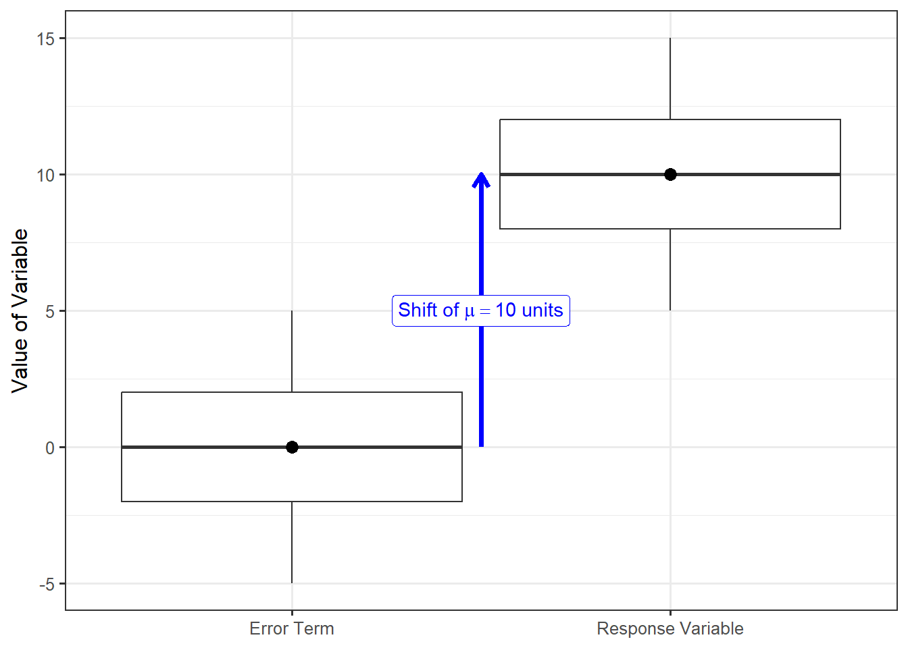

10 Model for the Data Generating Process
The numerical summaries of any study are subject to sampling variability. That is, if we were to repeat the study with new subjects, the statistics we compute would almost certainly change to some degree. The key to feeling confident in our results is to quantify the variability in our estimates; this was the rationale for developing a model of the sampling distribution of a statistic (Chapter 6) and a model for the null distribution of a statistic under a specified hypothesis (Chapter 7). Often times, constructing such models requires modeling the data-generating process as a precursor. As in any other discipline, statistical models simplify the actual process being modeled by making certain assumptions. In this chapter, we develop a model for the data generating process that will help us make inference about the mean of a single population. This will also serve as the foundation for how we approach problems in other contexts moving forward in the text.
Note
The word “model” is generic, and it applies to any representation of a complex process. We will either explicitly describe the model we are discussing (e.g., the model for the sampling distribution of a statistic), or it should be clear from context. Regardless, it is important to know which model is being referenced.
10.1 General Formulation
Consider dropping a tennis ball from the top of a 50-meter building and recording the time required before the ball hits the ground. Applying the principles learned in a first course in physics, we would be able to compute the time precisely using the formula
\[\text{time} = \sqrt{\frac{2(\text{distance})}{9.8}}\]
where \(9.8 m/s^2\) is the acceleration due to gravity; further, this formula works regardless of the mass of the object. Plugging 50 meters into the equation yields a time of 10.2 seconds. If we were to drop a second tennis ball from the same building, the formula tells us that it will also take 10.2 seconds to hit the ground below. This is known as a deterministic system since entering the same input results in the same output each time.
Definition 10.1 (Deterministic Process) A process for which the output is completely determined by the input(s). That is, the output can be determined with certainty.
While we often think of the above formula as a “law,” we should recognize that it is just a model. It simplifies extremely complex processes involving the gravitational pull between objects; it makes simplifying assumptions, such as the gravitational pull of your hand when you release the ball is negligible compared to the gravitational pull of the earth. More, the model works really well. Despite how well it works, it does not always match reality. If we were to repeatedly drop tennis balls from the same 50-meter building and record the time before hitting the ground, we might find that the time differs slightly from one ball to the next (it is true that these differences may be negligible, but they would exist nonetheless).
There are several reasons why our observed responses do not line up directly with those predicted by the above equation; for example, our device for measuring time may be subject to some measurement error, a strong gust of wind could alter the results (while the above equation assumes no air resistance), or the person dropping the ball may have inadvertently increased the initial velocity of the ball. These reasons, and others, contribute to the observations not lining up exactly with the model. That is, there is associated noise in the resulting measurements. A model which incorporates this noise might be written as
\[\text{time} = \sqrt{\frac{2(\text{distance})}{9.8}} + \text{noise}\]
where the noise is not a known quantity. In fact, the noise is not a constant as it varies from one observation to the next! As a result, the output of the model (time) is no longer fully determined by the input (distance); the output also depends on a random component, meaning the same input could result in different outputs. This is known as a stochastic model.
Definition 10.2 (Stochastic Process) A process for which the output cannot be predicted with certainty.
In the above example, the deterministic model was extended to include a stochastic component. This extension leads to our general formulation for a statistical model used in this text:
\[ \text{Response} = \text{function}(\text{predictor variables, parameters}) + \text{noise}. \tag{10.1}\]
The response we observe is the result of two components:
- A deterministic component that is a function of predictor variables and unknown parameters. It is often this component on which we would like to make inference.
- A stochastic component that captures the unexplained variability in the data generating process.
Since the noise is a random element which varies from one observation to another, it has a distribution. We often place conditions on the structure of this distribution to enable inference on the deterministic component of the model. We discuss this later in the chapter.
This general model introduces what we will see as a theme in statistical modeling — partitioning the variability in the response. The model says that part of the reason the response differs across units (or subjects) is because those units have different values of the predictor, and part of the reason the response differs across units is unexplained random noise. Notice that the response is also governed by the value of the parameters; however, as discussed in Chapter 3, parameters are numeric constants, so do they not vary from one unit to another. The above model just makes explicit how the parameters characterize the population — through the model for the data generating process. As before, while the parameters are constants, they are unknown. Our goal is to use data to make inference on the parameters and therefore make inference on how the data is generated.
The overall goal of a statistical model is to give an explanation for why the value of the response is what it is. How did it come to be? What process generated the values we have observed? Our statistical model says that these values have some deterministic component plus some additional random noise we cannot explain.
We now simplify this general formulation for the specific case of making inference on the population mean.
Note
We note that the above formulation assumes a quantitative response variable, which is the focus of this text. If your response is categorical, you can think of the response as simply the output of a lottery where the number of outcomes and the likelihood of each outcome is determined by a function of the predictor variables and parameters.
That is, the process is still stochastic, but the predictor variables and parameters impact the likelihood of a particular value being observed:
\[\text{Probability}(\text{Response is } y) = \text{function}(\text{predictor variables, parameters, } y)\]
10.2 Statistical Model for a Quantitative Response with No Predictors
Consider the Birth Weights Case Study described in Chapter 9.. Suppose we are interested in estimating the average birth weight of infants (carried to full term) born in North Carolina, the population from which our sample was taken. Our response variable is the birth weight of the infant. Our question of interest is not about the relationship of the birth weight to any other variable; that is, there are no predictor variables being considered. But, that does not mean the deterministic portion of our model is empty. We have a parameter of interest: the average birth weight. This parameter lives in the deterministic portion of the model. In particular, consider the following model for the data generating process:
\[(\text{Birth Weight})_i = \mu + \varepsilon_i\]
where \(\mu\) represents the average birth weight of infants born in North Carolina. In this model for the data generating process, the function that represents deterministic component of Equation 10.1 takes the value \(\mu\), a constant. The term \(\varepsilon_i\) is used to capture the random noise in the \(i\)-th measurement; the subscript indexes the individual infants in the sample, indicating that the noise in the birth weight for each infant potentially differs. This \(\varepsilon_i\) captures the difference between the birth weight for the \(i\)-th infant and the overall mean birth weight of all infants. This model says that the birth weight for the \(i\)-th infant is shifted (as a result of the noise term) from the overall average birth weight \(\mu\). Notice that if there were no noise in the system, the data generating process would say that all infants have the same birth weight \(\mu\). However, due to genetic variability, differences in the lifestyle of each mother, and measurement error, \(\varepsilon_i\) is not a constant (noise does exist), resulting in each subject having a different response.
Notice that the deterministic portion of the model describes the mean response through the parameter. This will be a running theme in the models we consider in this text.
Big Idea
The deterministic portion of the data generating process for Equation 10.1 describes the mean response; naturally, it is often referred to as the mean response function. Note that the mean response function is governed by parameters.
Certainly, this model for the data generating process is a simplified version of reality. Instead of capturing the impact of genetics or the impacts of lifestyle choices made by the infant’s mother on the infant’s birth weight, we simply allow those impacts to enter the random noise component of the model. This does not make the model for the data generating process incorrect; instead, it simply means our model will not explain the variability in the response. In later chapters we will begin to address this limitation. However, it is worth noting now that all models for the data generating process are simplified versions of reality, but that does not mean they are not helpful.
When the model for the data generating process does not contain a predictor variable, we are saying that the only source of variability in the response is random noise.
Big Idea
The stochastic component of a statistical model captures the unexplained variability due to natural variability in the population or measurement error in the response.
Data Generating Process for Single Mean Response
In general, given a quantitative response variable and no predictors, our model for the data generating process is
\[(\text{Response})_i = \mu + \varepsilon_i \tag{10.2}\]
where \(\mu\) represents the average response in the population, the parameter of interest.
It is worth pointing out that we have two “models” at this point: a model for the data generating process and a model for the sampling distribution of a statistic. The model for the data generating process is used to develop a model for the sampling distribution (or null distribution) of a statistic. It is the second model that is actually necessary in order to conduct inference; the model for the data generating process is simply a stepping stone to the model of interest.
10.3 Conditions on the Error Distribution
In our model for the data generating process we incorporated a component \(\varepsilon\) to capture the noise observed in the response. Since the error is a random variable (stochastic element), we know it has a distribution. We typically impose a certain structure to this distribution through the assumption of specific conditions. The more conditions we impose, the easier it is to construct an analytical model for the sampling distribution of the corresponding statistic. However, the more conditions we impose, the less applicable our model is in a general setting. More importantly for our discussion, the conditions we impose dictate how we conduct inference (the computation of a confidence interval or p-value).
Note
Why we need conditions on the stochastic portion of a model can be confusing at first. Think of it this way: saying a term is “random” is just too broad. It is like saying “I am thinking of a number. What number?” There are too many choices to even have a hope of getting it correct. We need structure (boundaries, conditions) on the problem. Placing conditions on what we mean by “random” is like saying “I am thinking of a whole number between 1 and 10.” Now, we have a problem we can at least attack with some confidence.
The first condition we consider is that the noise attributed to one observed unit is independent of the noise attributed to any other unit observed. That is, the amount of error \(\varepsilon\) in any one response is unrelated to the error in any other response observed. In context, the error in the birth weight of one infant is unrelated to the error in the birth weight of any other infant. It is easiest to understand this condition by examining a case when the condition would not hold.
Definition 10.3 (Independence) Two random variables are said to be independent when the likelihood that one random variable takes on a particular value does not depend on the value of the other random variable.
Similarly, two observations are said to be independent when the likelihood that one observation takes on a particular value does not depend on the value of the other observation.
Example 10.1 (Tire Rotation Timing) Suppose we are conducting a study to estimate the amount of time, on average, required for a novice technician to complete a tire rotation on an automobile. We gather a sample of 25 novice technicians. We have the first technician complete a tire rotation, allowing the other technicians to watch, and record the time required to complete the task. We then have the second technician complete a tire rotation, again allowing the other technicians to watch, and record the time required to complete the task. We continue in this way until we have recorded the time required to complete a tire rotation for each of the 25 technicians.
We could model the data generating process for this as
\[(\text{Time})_i = \mu + \varepsilon_i\]
where \(\mu\) is the average time required to complete a tire rotation for a novice technician. We might estimate the parameter \(\mu\) with \(\frac{1}{25}\sum_{i=1}^{25} (\text{Time})_i\), the sample mean time for the 25 observed technicians.
In Example 10.1, it would not be reasonable to assume the errors are independent of one another. Since each technician is able to observe the prior technicians, it is plausible that each technician’s performance is dependent on their observations (they are learning tricks by watching others go before them). As a result, the amount of noise in one technician’s time is related to the amount of noise in the next technician’s time. Requiring independence among observations prohibits these types of situations.
A second condition we consider is that the error for each subject is identically distributed. This ensures that every student essentially belongs to the same population.
Definition 10.4 (Identically Distributed) A set of random variables is said to be identically distributed if they are from the same population.
Similarly, a set of observations is said to be identically distributed if they share the same data generating process.
Practically, this condition means that we do not have a systematic component which is causing our population to be different from what we expected. As an example, let’s return to Example 10.1.
Example 10.2 (Tire Rotation Timing, Continued) Suppose we are conducting a study to estimate the amount of time, on average, required for a novice technician to complete a tire rotation on an automobile. We gather a sample of 25 novice technicians. All technicians are permitted to begin training in the facility. During the first week of training, we have the first technician complete a tire rotation and record the time required to complete the task. During the second week of training, we have the second technician complete a tire rotation and record the time required to complete the task. We continue in this way until we have recorded the time required to complete a tire rotation for each of the 25 technicians.
Again, we might posit the same model for the data generating process as in Example 10.1, and we might estimate the average time in the same way.
It would not be reasonable to assume the errors across all observations are from the same underlying population in Example 10.2. As the technicians are continuing their training over time, the group under study is changing over time. A technician with 10 weeks of training should not be expected to perform in the same way as a technician with 1 week of training. The observations are being drawn from a population that is changing over time. Therefore, we could not say that the underlying distribution is identical for each observation.
While there are many other conditions we might consider imposing on the data generating process, these two conditions (independence and identically distributed) are sufficient for modeling the sampling distribution of the sample mean (our statistic of interest here) using the bootstrap process we described in Chapter 6. In future chapters, we will consider the impact of adding additional conditions or relaxing these conditions.
Note
While not all authors make the distinction, we distinguish between a “condition” and an “assumption.” A condition is a mathematical requirement for justifying the statistical theory on which we are relying. However, in practice, we are never able to guarantee a condition is satisfied.
As a result, we will need to make certain assumptions about the data generating process. In future units, we will see how we determine which assumptions are reasonable. At this point, we simply emphasize that the assumptions we make govern the process by which we model the sampling distribution.
Throughout this section, we have been discussing the conditions placed on distribution of the error term — the stochastic portion of the model. We emphasize that these conditions are placed on the distribution, not the values themselves. Further, notice that Equation 10.2 states the response is formed by taking the error and shifting it by the constant \(\mu\); as a result, the distribution of the responses is simply a shifted version of the distribution of the error terms. Figure 10.1 illustrates this for a hypothetical population. Since the distribution of the response is just a shifted version of the distribution on the errors, any conditions placed on the distribution of the errors can be translated to statements on the distribution of the response.
Note
For the model described in Equation 10.2, stating
- the errors in the response for one observation is independent of the error in the response for all other observations, and
- the errors in the response are identically distributed
is equivalent to stating
- the response for one observation is independent of the response for all other observations, and
- the responses are identically distributed.
Before leaving this chapter, it is worth noting that the introduction of a model for the data generating process does not change any of the fundamentals of inference we have previously discussed. This chapter simply introduces a framework that allows us to unify all the methods we discuss in this text.